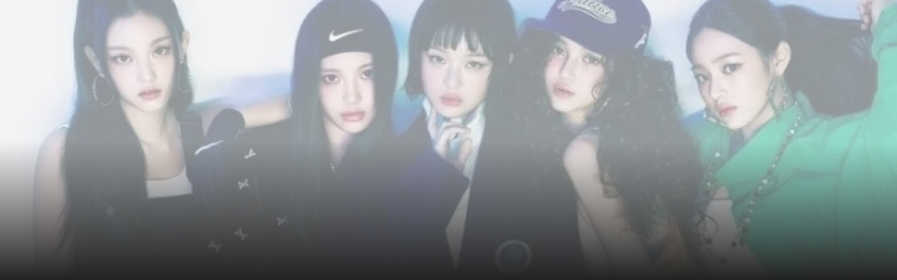
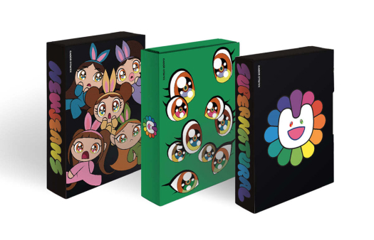

2025.02.13
소속사 어도어에 전속계약 해지 통보를 하고 독자 행보를 이어가고 있는
뉴진스가 지난해 6월 발표한
뉴진스가 지난해 6월 발표한 ‘슈퍼내추럴’이 국내 최대 음원 플
랫폼 멜론에서 2024년 가장 많은 들은 팝 2위를 기록하는 뉴진스가 지난해 6월 발표한 하는 이변(?)을 낳았다.
일본 데뷔 싱글이기 때문에 제이팝으로 분류된
탓이다. 일본 현지에서 노래를 발표하는 것은 케이(K)팝신에서 흔한
일이지만 국내 음원
플랫폼에서 차트 상위권에 오르는 것은 흔치 않은 경우다.
9일 멜론이 발표한 2024년 연간 해외차트를 보면 뉴진스의
‘슈퍼내추럴’은 2위를 차지했다. ‘슈퍼내추럴’ 외에도 같은 싱글에
수록된
‘라이트 나우’도 29위에 올랐다.
지난해 6월 도교돔 팬미팅 때 멤버 하니가 부른 마쓰다 세이코의
‘푸른산호초’도 95위에 올라 눈길을 끌었다. 정식 음원이 없기 때문에
원곡을 찾아 들은 것인데, 1980년에 발표된 노래가 순위에 오를 정도로
화제성이 컸다는 의미다.
1위는 찰리 푸스의 ‘아이 돈트 싱크 댓 아이 라이크 허’였다. 이곡은 2년
연속 1위에 오르며 탄탄한 국내 팬층을 입증했다. 이밖에 영화
‘엘리멘탈’ 삽입곡 ‘스틸 더 쇼’(3위), 찰리 푸스의
‘데인저러스리’(4위), 더 키드 라로이와 저스틴 비버가 함께 부른
‘스테이’(5위)가 해외
차트 상위권을 차지했다.
이날 함께 발표된 국내차트에서는 하이브 산하 플레디스의 신인 그룹
투어스의 ‘첫 만남은 계획대로 되지 않아’가 1위를 차지했다. 2위
는
(여자)아이들의 ‘나는 아픈 건 딱 질색이니까’, 3위는 에스파의
‘슈퍼노바’였다. 아이유의 ‘러브 윈스 올’(4위), 데이식스의 ‘한
페이지
가 될 수 있게’(5위)가 뒤를 이었다. 뉴진스는 ‘하우
스위트’가 15위를 기록하는 등 100위 안에 총 8곡을 차트에 올리며
국내차트에서도
강세를 보였다.
현재 이 차트는 멜론차트의 ‘시대별’ 카테고리에서 확인할 수 있다.
